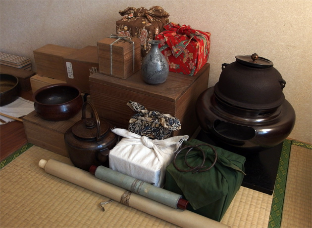
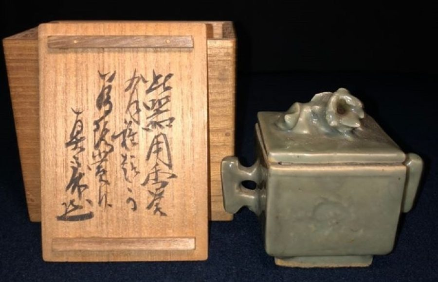

ABOUT US
私たちについて
茶道具に宿る時間と想いを、次の持ち主へ丁寧に受け継ぎます。
MESSAGE
茶道具の販売・買取・修理を通して、
受け継がれてきた品々を未来へ。
新古茶道具 宮原では、季節の茶道具、古くから多くの方々の手を渡って 大事にされてきた作品たちを、新しい所有者さまにお渡しするための お手伝いをしております。
藪内流の茶道具を中心に、掛物、茶碗、茶杓、茶筅、茶釜、棗など、 お茶会に彩りを加えられるような道具を取り揃えております。 多くの方の茶道を学ばれる際のお手伝いができますと幸いです。


OUR VALUE
道具に宿る時間を、
丁寧に受け継ぐ。
茶道具は、単なる品物ではなく、使い手の時間や記憶を含んだものです。 私たちは一点一点の状態を見極め、次に大切にしてくださる方へ 橋渡しすることを大切にしています。
INFORMATION
事業概要
- 屋号
- 新古茶道具 宮原
- 代表
- 宮原 様
- 事業内容
- 茶道具の販売・買取・修理
- 営業エリア
- 京都を中心に対応
- 所在地
- ※掲載情報に合わせて記載
- 電話番号
- ※掲載情報に合わせて記載
LICENSE
古物商許可
- 許可区分
- 特別国際種事業者
- 取扱品目
- ぞう科の牙及びその加工品
- 登録の有効期限
- 2026年5月31日
- 登録番号
- ※掲載情報に合わせて記載
茶道具のご相談はこちら
販売・買取・修理について、まずはお気軽にお問い合わせください。